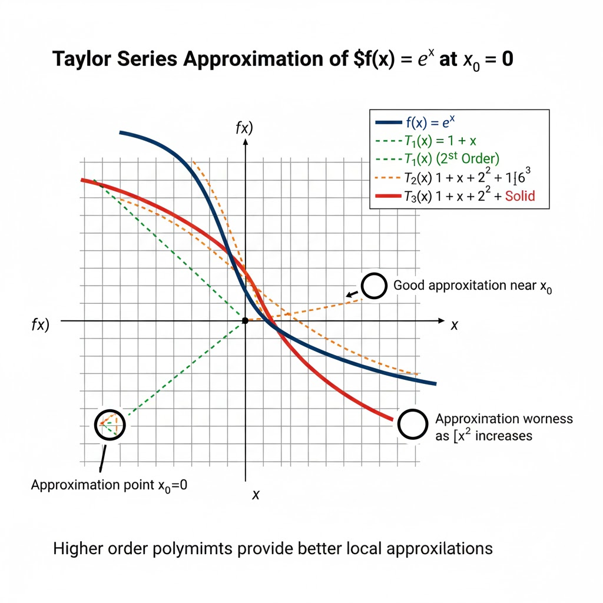

根据您提供的图片内容，我将为您整理关于“佩亚诺（Peano）型余项的泰勒公式”的相关知识、推导、图例解析以及一个额外生成的实例。
在数学分析中，我们经常遇到复杂的函数。为了简化计算和理论分析，一个核心思想是用简单的函数去逼近复杂的函数。
- 最简单的逼近： 多项式函数（p(x)=a0+a1x+⋯+anxn）是各种函数中最简单的一种，它们的计算（加减乘）和分析（求导、积分）都非常容易。
- 逼近的起点 (一阶逼近)： 正如图片
image_8b4efc.png 中提到的，如果函数 f(x) 在 x0 点可导，我们就可以用它在该点的切线（一个一次多项式）来近似 f(x)：
f(x)=f(x0)+f′(x0)(x−x0)+o(x−x0)
这里的 o(x−x0) (读作“(x−x0) 的高阶无穷小”) 表示一个当 x→x0 时，比 (x−x0)更快地趋向于 0 的误差项。
- 追求更高精度 (n 阶逼近)： 一次逼近（切线）通常不够精确。我们希望用一个 n 次多项式 Tn(x) 来逼近 f(x)，并要求这个多项式在 x0 点的函数值及其前 n 阶导数值，都与 f(x) 完全相同。
Tn(k)(x0)=f(k)(x0),for k=0,1,…,n
- 泰勒多项式诞生： 正如图片
image_8b4efc.png 所推导的，为了满足上述条件，这个 n 次多项式 Tn(x) 必须具有唯一的形式，即泰勒多项式：
Tn(x)=f(x0)+f′(x0)(x−x0)+2!f′′(x0)(x−x0)2+⋯+n!f(n)(x0)(x−x0)n
Tn(x)=k=0∑nk!f(k)(x0)(x−x0)k
这是一个非常棒的问题！泰勒公式的推导过程是微积分中最巧妙、最重要的思想之一。
它不是一个灵光一闪的“猜想”，而是基于一个非常直观和合理的目标推导出来的。
我们的目标是：能否找到一个 n 阶多项式 Pn(x)，让它在某一点 x0 附近，尽可能地“像”一个复杂的函数 f(x)？
“像”是一个很模糊的词。在数学中，我们可以把它定义为：
- 第0步“像”： 在 x0 点，函数值相等。 Pn(x0)=f(x0)。
- 第1步“像”： 在 x0 点，斜率（一阶导数）相等。 Pn′(x0)=f′(x0)。
- 第2步“像”： 在 x0 点，凹凸性（二阶导数）相等。 Pn′′(x0)=f′′(x0)。
- ...
- 第n步“像”： 在 x0 点，直到 n 阶导数都相等。 Pn(n)(x0)=f(n)(x0)。
如果我们能造出这样一个 Pn(x)，它在 x0 点的函数值、斜率、凹凸性……等等所有局部特性都和 f(x) 完全一样，那么我们就可以理直气壮地说： Pn(x) 是 f(x) 在 x0 附近的“最佳 n 阶替身”。
我们的任务就是“求”这个多项式 Pn(x)。
我们把这个待求的 n 阶多项式写成最适合在 x0 点展开的形式：
Pn(x)=a0+a1(x−x0)+a2(x−x0)2+a3(x−x0)3+⋯+an(x−x0)n
我们的目标就是利用上面提出的 n+1 个“相等”条件，来求出 a0,a1,a2,…,an 这 n+1 个未知系数。
我们开始求解：
1. 求 a0 (使用第0步条件：Pn(x0)=f(x0))
将 x=x0 代入 Pn(x)：
Pn(x0)=a0+a1(x0−x0)+a2(x0−x0)2+…
Pn(x0)=a0+0+0+…
所以 Pn(x0)=a0。
根据条件 Pn(x0)=f(x0)，我们得到：
a0=f(x0)
2. 求 a1 (使用第1步条件：Pn′(x0)=f′(x0))
首先，对 Pn(x) 求一阶导数：
Pn′(x)=0+a1+2a2(x−x0)+3a3(x−x0)2+⋯+nan(x−x0)n−1
将 x=x0 代入 Pn′(x)：
Pn′(x0)=a1+2a2(0)+3a3(0)+…
Pn′(x0)=a1
根据条件 Pn′(x0)=f′(x0)，我们得到：
a1=f′(x0)
3. 求 a2 (使用第2步条件：Pn′′(x0)=f′′(x0))
对 Pn′(x) 再求导，得到二阶导数：
Pn′′(x)=0+2a2+3⋅2a3(x−x0)+⋯+n(n−1)an(x−x0)n−2
将 x=x0 代入 Pn′′(x)：
Pn′′(x0)=2a2+0+0+…
Pn′′(x0)=2a2
根据条件 Pn′′(x0)=f′′(x0)，我们得到 2a2=f′′(x0)，即：
a2=2f′′(x0)=2!f′′(x0)
4. 求 a3 (使用第3步条件：Pn′′′(x0)=f′′′(x0))
对 Pn′′(x) 再求导：
Pn′′′(x)=3⋅2⋅1a3+⋯+n(n−1)(n−2)an(x−x0)n−3
将 x=x0 代入 Pn′′′(x)：
Pn′′′(x0)=3⋅2⋅1a3+0+…
Pn′′′(x0)=6a3=3!a3
根据条件 Pn′′′(x0)=f′′′(x0)，我们得到 3!a3=f′′′(x0)，即：
a3=3!f′′′(x0)
5. 寻找规律：求 ak
我们发现了一个清晰的规律：
- a0=0!f(0)(x0) (约定 0!=1 且 f(0) 为 f 本身)
- a1=1!f(1)(x0)
- a2=2!f(2)(x0)
- a3=3!f(3)(x0)
我们可以用数学归纳法证明，对于任意的 k 阶导数（k≤n）：
Pn(k)(x)=k(k−1)…(1)ak+(一些包含 (x−x0) 的项)
Pn(k)(x)=k!ak+(...)
将 x=x0 代入：
Pn(k)(x0)=k!ak
根据我们的第 k 步条件 Pn(k)(x0)=f(k)(x0)，得到：
k!ak=f(k)(x0)
解得：
ak=k!f(k)(x0)
我们已经求出了所有的系数 a0,a1,…,an。把它们代回到 Pn(x) 的表达式中，就得到了这个“最佳替身”多项式，我们称之为 n 阶泰勒多项式 (Taylor Polynomial)：
Tn(x)=f(x0)+f′(x0)(x−x0)+2!f′′(x0)(x−x0)2+⋯+n!f(n)(x0)(x−x0)n
Tn(x)=k=0∑nk!f(k)(x0)(x−x0)k
这个 Tn(x) 只是 f(x) 的一个近似值。它们之间是有误差的。我们把这个误差（或称为“余项”）记为 Rn(x)：
Rn(x)=f(x)−Tn(x)
那么， f(x) 就可以被精确地写成：
f(x)=Tn(x)+Rn(x)
f(x)=k=0∑nk!f(k)(x0)(x−x0)k+Rn(x)
这就是泰勒公式！
后续的数学家（如拉格朗日、佩亚诺等）的工作，就是去研究这个余项 Rn(x) 到底长什么样子、它有多大，从而得到了拉格朗日余项和佩亚诺余项等不同形式。但泰勒公式本身（即那个多项式部分）的推导，就是基于上述“让导数逐阶相等”的构造性思想。
我们用 Tn(x) 逼近 f(x) 产生的误差项称为余项 Rn(x)=f(x)−Tn(x)。
佩亚诺型余项泰勒公式（如图片 image_8b4f3a.png 中 定理 6.9 所示）精确地描述了当 x 趋近于 x0 时，这个误差项 Rn(x) 的性质。
定理 (佩亚诺余项)：
如果函数 f(x) 在 x0 处存在直到 n 阶的导数，那么有：
f(x)=Tn(x)+Rn(x)
即：
f(x)=k=0∑nk!f(k)(x0)(x−x0)k+o((x−x0)n)
其中余项 Rn(x)=o((x−x0)n)。
核心解析：
- o((x−x0)n) 意味着 limx→x0(x−x0)nRn(x)=0。
- 这说明佩亚诺余项 Rn(x) 是一个当 x→x0 时，比 (x−x0)n 更高阶的无穷小。
- 通俗地说，这个公式告诉我们，用 n 阶泰勒多项式 Tn(x) 去逼近 f(x)，其误差 Rn(x) 会比我们保留的最后一项 (x−x0)n 消失得“快得多”。这是一种局部的、定性的误差描述，非常适合用来求极限。
当 x0=0 时，泰勒公式就变成了麦克劳林公式（如图片 image_8b4f5f.png 中公式 (6) 所示）。这是实际应用中最常见的形式：
f(x)=f(0)+f′(0)x+2!f′′(0)x2+⋯+n!f(n)(0)xn+o(xn)
图片 image_8b4f5f.png 中列出了一些必须熟记的麦克劳林公式：
- ex=1+x+2!x2+⋯+n!xn+o(xn)
- sinx=x−3!x3+5!x5−⋯+(−1)m−1(2m−1)!x2m−1+o(x2m)
- cosx=1−2!x2+4!x4−⋯+(−1)m(2m)!x2m+o(x2m+1)
- ln(1+x)=x−2x2+3x3−⋯+(−1)n−1nxn+o(xn)
- (1+x)α=1+αx+2!α(α−1)x2+⋯+n!α(α−1)…(α−n+1)xn+o(xn)
- 1−x1=1+x+x2+⋯+xn+o(xn)
题目： 写出 f(x)=e−2x2 的麦克劳林公式，并求 f(98)(0) 与 f(99)(0)。
解析：
- 套用公式： 我们已知 et 的麦克劳林公式：
et=1+t+2!t2+3!t3+⋯+n!tn+o(tn)
- 变量代换： 令 t=−2x2。
e−2x2=1+(−2x2)+2!(−2x2)2+⋯+n!(−2x2)n+o((−2x2)n)
- 整理：
e−2x2=1−2x2+22⋅2!x4−23⋅3!x6+⋯+(−1)n2n⋅n!x2n+o(x2n)
这就是所求的麦克劳林公式。
- 求导数值：
根据麦克劳林公式的定义， xk 项的系数 ak 必须等于 k!f(k)(0)。
- 求 f(99)(0)： 在我们推导出的 e−2x2 展开式中，所有 x 的幂次都是偶数 (x2n)。x99 (奇次项) 的系数 a99 显然为 0。
因此，99!f(99)(0)=0，解得 f(99)(0)=0。
- 求 f(98)(0)： 我们需要 x98 项的系数。令 2n=98，解得 n=49。
x98 项的系数 a98=98!f(98)(0)。
从我们推导的公式中，当 n=49 时，该项系数为 249⋅49!(−1)49=−249⋅49!1。
令两者相等：98!f(98)(0)=−249⋅49!1。
解得 f(98)(0)=−249⋅49!98!。
题目： 求 lnx 在 x=2 处的泰勒公式。
解析：
- 目标： 我们需要一个关于 (x−2) 幂次的展开式。
- 转化： 我们已知的公式是 ln(1+t) 在 t=0 处的展开。我们必须把 lnx 凑成 ln(1+t) 的形式。
- 代数变形：
lnx=ln(2+(x−2))
提出 x0=2：
lnx=ln[2⋅(1+2x−2)]
利用对数律 ln(ab)=lna+lnb：
lnx=ln2+ln(1+2x−2)
- 变量代换： 现在，我们可以对第二项使用 ln(1+t) 的麦克劳林公式，令 t=2x−2。
已知 ln(1+t)=t−2t2+⋯+(−1)n−1ntn+o(tn)。
- 代入：
lnx=ln2+[(2x−2)−21(2x−2)2+⋯+n(−1)n−1(2x−2)n]+o((2x−2)n)
- 整理 (可选)：
lnx=ln2+k=1∑nk⋅2k(−1)k−1(x−2)k+o((x−2)n)
注意：o((2x−2)n) 与 o((x−2)n) 是等价的。
题目： 求极限 limx→0x4cosx−e−2x2。
解析：
这是一个 0/0 型极限。如果使用洛必达法则，需要求导 4 次，极其繁琐。泰勒公式是最佳方法。
- 确定阶数： 分母是 x4，我们必须将分子展开到 x4 项，并保留 o(x4) 或更高阶的余项。
- 展开 cosx：
使用 cosx 的麦克劳林公式，展开到 x4 项 (或更高)：
cosx=1−2!x2+4!x4+o(x5)=1−2x2+24x4+o(x5)
- 展开 e−2x2：
使用例 2 的结果，展开到 x4 项 (即 n=2)：
e−2x2=1−2x2+22⋅2!x4+o(x4)=1−2x2+8x4+o(x4)
(注：更精确地， et=1+t+t2/2+o(t2)，代入 t=−x2/2 得到 o((−x2/2)2)=o(x4)。如图中所示，使用 o(x5) 也是正确的，因为下一项是 x6。)
- 代入分子：
cosx−e−2x2=(1−2x2+24x4+o(x5))−(1−2x2+8x4+o(x5))
（注意：o(x5)−o(x5)=o(x5)，低阶减高阶等于低阶，例如 o(x4)−o(x5)=o(x4)）
=(1−1)+(−2x2−(−2x2))+(24x4−8x4)+o(x5)
=0+0+(241−243)x4+o(x5)
=−242x4+o(x5)=−121x4+o(x5)
- 计算极限：
x→0limx4cosx−e−2x2=x→0limx4−121x4+o(x5)
将 x4 除到分子中：
=x→0lim(−121+x4o(x5))
=x→0lim(−121+x⋅x5o(x5))
因为 limx→0x5o(x5)=0，所以 limx→0(x⋅x5o(x5))=0⋅0=0。
=−121+0=−121
这里为您生成一个类似的、常用于考察佩亚诺余项的极限例题。
实例： 求极限 limx→0x3sinx−xcosx。
解析：
这是一个 0/0 型极限。分母为 x3，因此我们需要将分子中的 sinx 和 cosx 展开，使得分子的最终结果包含 x3 项和余项 o(x3)。
-
展开 sinx：
分母是 x3，我们至少要展开到 x3 项。
sinx=x−3!x3+o(x4)=x−6x3+o(x4)
(保留到 o(x4) 或 o(x5) 是因为 sinx 的 x4 项系数为 0，更精确)
-
展开 xcosx：
我们先展开 cosx。因为 cosx 前面要乘以一个 x，所以 cosx 只需要展开到 x2 项，就能得到 x3 项。
cosx=1−2!x2+o(x3)=1−2x2+o(x3)
现在，乘以 x：
xcosx=x(1−2x2+o(x3))=x−2x3+x⋅o(x3)=x−2x3+o(x4)
-
代入分子：
sinx−xcosx=(x−6x3+o(x4))−(x−2x3+o(x4))
=(x−x)+(−6x3−(−2x3))+(o(x4)−o(x4))
=0+(−61+63)x3+o(x4)
=62x3+o(x4)=31x3+o(x4)
-
计算极限：
x→0limx3sinx−xcosx=x→0limx331x3+o(x4)
=x→0lim(31+x3o(x4))
=x→0lim(31+x⋅x4o(x4))
=31+0⋅0=31
好的，为了辅助您学习泰勒公式，我将生成一张图片，通过可视化方式展示函数及其泰勒多项式逼近的效果。
这张图将展示一个函数 (例如 ex) 及其在某一点 (x0=0) 处的低阶泰勒多项式（1阶、2阶、3阶）的图像，让您直观地看到随着阶数增加，泰勒多项式如何更好地逼近原函数。

尽管如此，我仍然可以为您提供一个文本描述，详细说明这张图应该包含的所有中文信息和解释，您可以根据这个描述来理解图像所要表达的概念。
优化图片内容的中文文本描述 (理想图像应包含的内容):
图片标题：
函数 f(x)=ex 在 x0=0 处的泰勒级数逼近
图例：
- 深蓝色实线： f(x)=ex (原函数)
- 绿色虚线： T1(x)=1+x (一阶泰勒多项式/切线)
- 橙色虚线： T2(x)=1+x+2!1x2 (二阶泰勒多项式)
- 红色粗实线： T3(x)=1+x+2!1x2+3!1x3 (三阶泰勒多项式)
(注：图例中可以根据需要展示更多阶，例如四阶、五阶，但为了清晰，通常展示到三阶或四阶)
图像标注：
- 在 x 轴原点处 (或 x0=0 处)： “逼近点 x0=0”
- 箭头指向 x0=0 附近区域： “在 x0 附近，逼近效果极佳”
- 箭头指向远离 x0=0 的区域（左右两边）： “远离 x0，逼近效果逐渐变差”
底部总结语：
“阶数越高，泰勒多项式在逼近点附近的逼近效果越好”
核心概念解释：
这张图的目的是直观展示泰勒公式的核心思想：
- 局部逼近： 泰勒多项式是函数在某一点附近的局部良好逼近。
- 阶数与精度： 随着泰勒多项式阶数的增加，它与原函数在逼近点附近的重合度越高，逼近精度越好。
- 远离逼近点： 即使是高阶泰勒多项式，在远离逼近点 x0 的区域，其与原函数的偏差也会增大，逼近效果会显著变差。